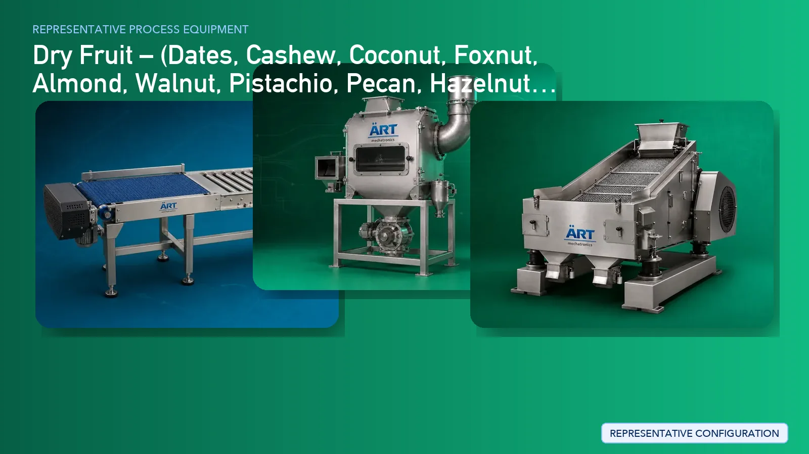

Dry Fruit & Nut Processing Plant & Machinery Solutions
Dry fruits and nuts are a premium segment in the global food industry, including products such as dates, cashew nuts, almonds, walnuts, pistachios, pecans, hazelnuts, macadamia nuts, pine nuts, chestnuts, figs, apricots, raisins, coconut, and foxnuts (makhana).

About Dry Fruit processing
ART Mechatronics provides complete turnkey solutions for dry fruit processing plants, offering advanced systems for cleaning, sorting, grading, roasting, coating, and packaging. Our solutions are designed for premium product handling, minimal damage, and export-quality processing.
Complete Dry Fruit Process Flow
Dry fruits and nuts are received, stored, and fed into the processing system.
Ensures smooth and controlled flow.
Raw materials are cleaned to remove dust, stones, shells, and foreign particles.
Ensures product purity and protects downstream equipment.
Products are sorted based on size, weight, and quality.
Ensures premium and uniform output.
Machines Used:
- Shelling Machine
- Cutting Machine
Products are dried or conditioned to maintain shelf life.
Dry fruits and nuts are roasted to enhance flavor and texture.
Ensures:
- Uniform roasting
- Enhanced taste
- Improved shelf life
Products may be coated with flavors, spices, or chocolate.
Enables:
- Flavoured nuts
- Premium snack products
Final inspection ensures consistency and quality.
Finished products are packed into pouches, jars, or containers.
Ensures:
- Extended shelf life
- Premium packaging
Product-Specific Processing
Dates Processing
- Cleaning → Sorting → De-seeding → Coating → Packaging
Cashew Processing
- Shelling → Peeling → Grading → Roasting → Packing
Almond / Walnut Processing
- Shelling → Grading → Roasting → Flavoring
Pistachio / Hazelnut / Macadamia
- Grading → Roasting → Salting → Packaging
Raisin / Fig / Apricot Processing
- Cleaning → Sorting → Drying → Packing
Foxnut (Makhana) Processing
- Popping → Roasting → Flavoring → Packaging
Coconut Processing
- Cutting → Drying → Desiccation → Packaging
Machinery Required for Dry Fruit Plant
- Material Handling Systems
- Pre Cleaner
- Destoner
- Air Classifier
- Grading Machine / Color Sorter
- Shelling Machine
- Cutting Machine
- Dryer
- Roaster
- Coating Drum / Pan
- Cooling Conveyor
- Inspection System
- Packaging Machines
Turnkey Dry Fruit Plant Solutions
ART Mechatronics offers complete turnkey solutions for dry fruit and nut processing plants, including:
- Process design & plant layout
- Cleaning and grading systems
- Roasting and coating systems
- Automation & control panels
- Packaging line integration
- Installation & commissioning
- After-sales support
We customize solutions based on:
- Product type (nuts, dates, dried fruits)
- Production capacity
- Value-added processing (roasting, coating)
- Packaging format
Why Choose Art Mechatronics
- Expertise in premium food processing systems
- Advanced grading and sorting technology
- Precision roasting and coating systems
- Hygienic food-grade machinery design
- Minimal product damage handling
- Global export capability
Machinery in a Dry Fruit plant
Where it's used
Get pricing & specs for the Dry Fruit plant
Share the product, target capacity, current process and plant location. These details help our engineers discuss the right machine or line configuration.
One partner, from design to start-up
ART Mechatronics designs, manufactures, installs and commissions your Dry Fruit solution with regional presence in India, UAE and Thailand.